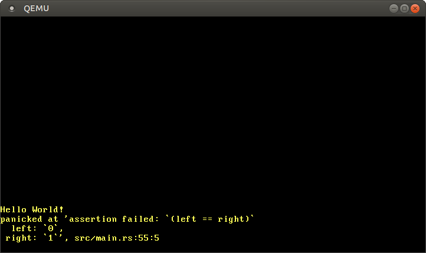

内核测试
翻译内容： 这是对原文章 Testing 的社区中文翻译。它可能不完整，过时或者包含错误。可以在 这个 Issue 上评论和提问！
翻译者： @luojia65, @Rustin-Liu 和 @liuyuran. With contributions from @JiangengDong.
本文主要讲述了在no_std环境下进行单元测试和集成测试的方法。我们将通过Rust的自定义测试框架来在我们的内核中执行一些测试函数。为了将结果反馈到QEMU上，我们需要使用QEMU的一些其他的功能以及bootimage工具。
这个系列的blog在GitHub上开放开发，如果你有任何问题，请在这里开一个issue来讨论。当然你也可以在底部留言。你可以在post-04找到这篇文章的完整源码。
目录
🔗阅读要求
这篇文章替换了此前的(现在已经过时了) 单元测试(Unit Testing) 和 集成测试(Integration Tests) 两篇文章。这里我将假定你是在2019-04-27日后阅读的最小Rust内核一文。总而言之，本文要求你已经有一个已设置默认目标的 .cargo/config 文件且定义了一个runner可执行文件。
🔗Rust中的测试
Rust有一个内置的测试框架（built-in test framework）：无需任何设置就可以进行单元测试，只需要创建一个通过assert来检查结果的函数并在函数的头部加上 #[test] 属性即可。然后 cargo test 会自动找到并执行你的crate中的所有测试函数。
不幸的是，对于一个 no_std 的应用，比如我们的内核，这就有点复杂了。现在的问题是，Rust的测试框架会隐式的调用内置的test库，但是这个库依赖于标准库。这也就是说我们的 #[no_std] 内核无法使用默认的测试框架。
当我们试图在我们的项目中执行 cargo test 时，我们可以看到如下信息:
> cargo test
Compiling blog_os v0.1.0 (/…/blog_os)
error[E0463]: can't find crate for `test`
由于 test 库依赖于标准库，所以它在我们的裸机目标上并不可用。虽然将 test 库移植到一个 #[no_std] 上下文环境中是可能的，但是这样做是高度不稳定的，并且还会需要一些特殊的hacks，例如重定义 panic 宏。
🔗自定义测试框架
幸运的是，Rust支持通过使用不稳定的自定义测试框架（custom_test_frameworks） 功能来替换默认的测试框架。该功能不需要额外的库，因此在 #[no_std]环境中它也可以工作。它的工作原理是收集所有标注了 #[test_case]属性的函数，然后将这个测试函数的列表作为参数传递给用户指定的runner函数。因此，它实现了对测试过程的最大控制。
与默认的测试框架相比，它的缺点是有一些高级功能诸如 should_panic tests 都不可用了。相对的，如果需要这些功能，我们需要自己来实现。当然，这点对我们来说是好事，因为我们的环境非常特殊，在这个环境里，这些高级功能的默认实现无论如何都是无法工作的，举个例子， #[should_panic] 属性依赖于栈展开来捕获内核panic，而我们的内核早已将其禁用了。
要为我们的内核实现自定义测试框架，我们需要将如下代码添加到我们的 main.rs 中去:
// in src/main.rs
#![feature(custom_test_frameworks)]
#![test_runner(crate::test_runner)]
#[cfg(test)]
fn test_runner(tests: &[&dyn Fn()]) {
println!("Running {} tests", tests.len());
for test in tests {
test();
}
}
我们的runner会打印一个简短的debug信息然后调用列表中的每个测试函数。参数类型 &[&dyn Fn()] 是Fn() trait的 trait object 引用的一个 slice。它基本上可以被看做一个可以像函数一样被调用的类型的引用列表。由于这个函数在不进行测试的时候没有什么用，这里我们使用 #[cfg(test)]属性保证它只会出现在测试中。
现在当我们运行 cargo test ，我们可以发现运行成功了。然而，我们看到的仍然是“Hello World“而不是我们的 test_runner传递来的信息。这是由于我们的入口点仍然是 _start 函数——自定义测试框架会生成一个main函数来调用test_runner，但是由于我们使用了 #[no_main]并提供了我们自己的入口点，所以这个main函数就被忽略了。
Note: cargo目前有个bug，就是某些测试用例会在执行 cargo test 时抛出 duplicate lang item 错误。目前已知的复现条件是在你的 Cargo.toml 中配置 panic = "abort"，只要移除掉，cargo test 即可正常执行。如果你对这个bug感兴趣，可以关注一下这个 cargo issue。
为了修复这个问题，我们需要通过 reexport_test_harness_main属性来将生成的函数的名称更改为与main不同的名称。然后我们可以在我们的_start函数里调用这个重命名的函数:
// in src/main.rs
#![reexport_test_harness_main = "test_main"]
#[no_mangle]
pub extern "C" fn _start() -> ! {
println!("Hello World{}", "!");
#[cfg(test)]
test_main();
loop {}
}
我们将测试框架的入口函数的名字设置为test_main，并在我们的 _start入口点里调用它。通过使用条件编译（conditional compilation），我们能够只在上下文环境为测试（test）时调用 test_main ，因为该函数将不在非测试上下文中生成。
现在当我们执行 cargo test时，我们可以看到我们的test_runner将“Running 0 tests“信息显示在屏幕上了。我们可以创建第一个测试函数了:
// in src/main.rs
#[test_case]
fn trivial_assertion() {
print!("trivial assertion... ");
assert_eq!(1, 1);
println!("[ok]");
}
现在，当我们运行 cargo test 时，我们可以看到如下输出:
![QEMU printing “Hello World!”, “Running 1 tests”, and “trivial assertion… [ok]”](../../testing/qemu-test-runner-output.png)
传递给 test_runner函数的tests切片里包含了一个 trivial_assertion 函数的引用，从屏幕上输出的 trivial assertion... [ok] 信息可见，我们的测试已被调用并且顺利通过。
在执行完tests后， test_runner 会将结果返回给 test_main 函数，而这个函数又返回到 _start 入口点函数——这样我们就进入了一个死循环，因为入口点函数是不允许返回的。这将导致一个问题：我们希望 cargo test 在所有的测试运行完毕后，直接返回并退出。
🔗退出QEMU
现在我们在 _start 函数结束后进入了一个死循环，所以每次执行完 cargo test 后我们都需要手动去关闭QEMU；但是我们还想在没有用户交互的脚本环境下执行 cargo test。解决这个问题的最佳方式，是实现一个合适的方法来关闭我们的操作系统——不幸的是，这个方式实现起来相对有些复杂，因为这要求我们实现对APM或ACPI电源管理标准的支持。
幸运的是，还有一个绕开这些问题的办法：QEMU支持一种名为 isa-debug-exit 的特殊设备，它提供了一种从客户系统（guest system）里退出QEMU的简单方式。为了使用这个设备，我们需要向QEMU传递一个 -device 参数。当然，我们也可以通过将 package.metadata.bootimage.test-args 配置关键字添加到我们的 Cargo.toml 来达到目的：
# in Cargo.toml
[package.metadata.bootimage]
test-args = ["-device", "isa-debug-exit,iobase=0xf4,iosize=0x04"]
bootimage runner 会在QEMU的默认测试命令后添加 test-args 参数。（对于 cargo run 命令，这个参数会被忽略。）
在传递设备名 (isa-debug-exit)的同时，我们还传递了两个参数，iobase 和 iosize 。这两个参数指定了一个_I/O 端口_，我们的内核将通过它来访问设备。
🔗I/O 端口
在x86平台上，CPU和外围硬件通信通常有两种方式，内存映射I/O和端口映射I/O。之前，我们已经使用内存映射的方式，通过内存地址 0xb8000 访问了[VGA文本缓冲区]。该地址并没有映射到RAM，而是映射到了VGA设备的一部分内存上。
与内存映射不同，端口映射I/O使用独立的I/O总线来进行通信。每个外围设备都有一个或数个端口号。CPU采用了特殊的in和out指令来和端口通信，这些指令要求一个端口号和一个字节的数据作为参数（有些这种指令的变体也允许发送 u16 或是 u32 长度的数据）。
isa-debug-exit 设备使用的就是端口映射I/O。其中， iobase 参数指定了设备对应的端口地址（在x86中，0xf4 是一个通常未被使用的端口），而 iosize 则指定了端口的大小（0x04 代表4字节）。
🔗使用退出(Exit)设备
isa-debug-exit 设备的功能非常简单。当一个 value 写入 iobase 指定的端口时，它会导致QEMU以退出状态（exit status）(value << 1) | 1 退出。也就是说，当我们向端口写入 0 时，QEMU将以退出状态 (0 << 1) | 1 = 1 退出，而当我们向端口写入1时，它将以退出状态 (1 << 1) | 1 = 3 退出。
这里我们使用 x86_64 crate提供的抽象，而不是手动调用 in 或 out 指令。为了添加对该crate的依赖，我们可以将其添加到我们的 Cargo.toml中的 dependencies 小节中去:
# in Cargo.toml
[dependencies]
x86_64 = "0.14.2"
现在我们可以使用crate中提供的 Port 类型来创建一个 exit_qemu 函数了:
// in src/main.rs
#[derive(Debug, Clone, Copy, PartialEq, Eq)]
#[repr(u32)]
pub enum QemuExitCode {
Success = 0x10,
Failed = 0x11,
}
pub fn exit_qemu(exit_code: QemuExitCode) {
use x86_64::instructions::port::Port;
unsafe {
let mut port = Port::new(0xf4);
port.write(exit_code as u32);
}
}
该函数在 0xf4 处创建了一个新的端口，该端口同时也是 isa-debug-exit 设备的 iobase 。然后它会向端口写入传递的退出代码。这里我们使用 u32 来传递数据，因为我们之前已经将 isa-debug-exit 设备的 iosize 指定为4字节了。上述两个操作都是 unsafe 的，因为I/O端口的写入操作通常会导致一些不可预知的行为。
为了指定退出状态，我们创建了一个 QemuExitCode 枚举。思路大体上是，如果所有的测试均成功，就以成功退出码退出；否则就以失败退出码退出。这个枚举类型被标记为 #[repr(u32)]，代表每个变量都是一个 u32 的整数类型。我们使用退出代码 0x10 代表成功，0x11 代表失败。 实际的退出代码并不重要，只要它们不与QEMU的默认退出代码冲突即可。 例如，使用退出代码0表示成功可能并不是一个好主意，因为它在转换后就变成了 (0 << 1) | 1 = 1 ，而 1 是QEMU运行失败时的默认退出代码。 这样，我们就无法将QEMU错误与成功的测试运行区分开来了。
现在我们来更新 test_runner 的代码，让程序在运行所有测试完毕后退出QEMU：
// in src/main.rs
fn test_runner(tests: &[&dyn Fn()]) {
println!("Running {} tests", tests.len());
for test in tests {
test();
}
/// new
exit_qemu(QemuExitCode::Success);
}
当我们现在运行 cargo test 时，QEMU会在测试运行后立刻退出。现在的问题是，即使我们传递了表示成功（Success）的退出代码， cargo test 依然会将所有的测试都视为失败：
> cargo test
Finished dev [unoptimized + debuginfo] target(s) in 0.03s
Running target/x86_64-blog_os/debug/deps/blog_os-5804fc7d2dd4c9be
Building bootloader
Compiling bootloader v0.5.3 (/home/philipp/Documents/bootloader)
Finished release [optimized + debuginfo] target(s) in 1.07s
Running: `qemu-system-x86_64 -drive format=raw,file=/…/target/x86_64-blog_os/debug/
deps/bootimage-blog_os-5804fc7d2dd4c9be.bin -device isa-debug-exit,iobase=0xf4,
iosize=0x04`
error: test failed, to rerun pass '--bin blog_os'
这里的问题在于，cargo test 会将所有非 0 的错误码都视为测试失败。
🔗成功退出(Exit)代码
为了解决这个问题， bootimage 提供了一个 test-success-exit-code 配置项，可以将指定的退出代码映射到退出代码 0:
# in Cargo.toml
[package.metadata.bootimage]
test-args = […]
test-success-exit-code = 33 # (0x10 << 1) | 1
有了这个配置，bootimage 就会将我们的成功退出码映射到退出码0；这样一来， cargo test 就能正确地识别出测试成功的情况，而不会将其视为测试失败。
我们的 test runner 现在会在正确报告测试结果后自动关闭QEMU。我们可以看到QEMU的窗口只会显示很短的时间——我们很难看清测试的结果。如果测试结果会打印在控制台上而不是QEMU里，让我们能在QEMU退出后仍然能看到测试结果就好了。
🔗打印到控制台
要在控制台上查看测试输出，我们需要以某种方式将数据从内核发送到宿主系统。 有多种方法可以实现这一点，例如通过TCP网络接口来发送数据。但是，设置网络堆栈是一项很复杂的任务，这里我们可以选择更简单的解决方案。
🔗串口
发送数据的一个简单的方式是通过串行端口，这是一个现代电脑中已经不存在的旧标准接口（译者注：玩过单片机的同学应该知道，其实译者上大学的时候有些同学的笔记本电脑还有串口的，没有串口的同学在烧录单片机程序的时候也都会需要usb转串口线，一般是51，像stm32有st-link，这个另说，不过其实也可以用串口来下载）。串口非常易于编程，QEMU可以将通过串口发送的数据重定向到宿主机的标准输出或是文件中。
用来实现串行接口的芯片被称为 UARTs。在x86上，有很多UART模型，但是幸运的是，它们之间仅有的那些不同之处都是我们用不到的高级功能。目前通用的UARTs都会兼容16550 UART，所以我们在我们测试框架里采用该模型。
我们使用 uart_16550 crate来初始化UART，并通过串口来发送数据。为了将该crate添加为依赖，我们需要将 Cargo.toml 和 main.rs 修改为如下:
# in Cargo.toml
[dependencies]
uart_16550 = "0.2.0"
uart_16550 crate包含了一个代表UART寄存器的 SerialPort 结构体，但是我们仍然需要自己来创建一个相应的实例。我们使用以下代码来创建一个新的串口模块 serial:
// in src/main.rs
mod serial;
// in src/serial.rs
use uart_16550::SerialPort;
use spin::Mutex;
use lazy_static::lazy_static;
lazy_static! {
pub static ref SERIAL1: Mutex<SerialPort> = {
let mut serial_port = unsafe { SerialPort::new(0x3F8) };
serial_port.init();
Mutex::new(serial_port)
};
}
就像VGA文本缓冲区一样，我们使用 lazy_static 和一个自旋锁来创建一个 static writer实例。通过使用 lazy_static ，我们可以保证 init 方法只会在该示例第一次被使用使被调用。
和 isa-debug-exit 设备一样，UART也是通过I/O端口进行编程的。由于UART相对来讲更加复杂，它使用多个I/O端口来对不同的设备寄存器进行编程。unsafe 的 SerialPort::new 函数需要UART的第一个I/O端口的地址作为参数，从该地址中可以计算出所有所需端口的地址。我们传递的端口地址为 0x3F8 ，该地址是第一个串行接口的标准端口号。
为了使串口更加易用，我们添加了 serial_print! 和 serial_println!宏:
// in src/serial.rs
#[doc(hidden)]
pub fn _print(args: ::core::fmt::Arguments) {
use core::fmt::Write;
SERIAL1.lock().write_fmt(args).expect("Printing to serial failed");
}
/// Prints to the host through the serial interface.
#[macro_export]
macro_rules! serial_print {
($($arg:tt)*) => {
$crate::serial::_print(format_args!($($arg)*));
};
}
/// Prints to the host through the serial interface, appending a newline.
#[macro_export]
macro_rules! serial_println {
() => ($crate::serial_print!("\n"));
($fmt:expr) => ($crate::serial_print!(concat!($fmt, "\n")));
($fmt:expr, $($arg:tt)*) => ($crate::serial_print!(
concat!($fmt, "\n"), $($arg)*));
}
该实现和我们此前的 print 和 println 宏的实现非常类似。 由于 SerialPort 类型已经实现了 fmt::Write trait，所以我们不需要提供我们自己的实现了。
现在我们可以从测试代码里向串行接口打印而不是向VGA文本缓冲区打印了:
// in src/main.rs
#[cfg(test)]
fn test_runner(tests: &[&dyn Fn()]) {
serial_println!("Running {} tests", tests.len());
[…]
}
#[test_case]
fn trivial_assertion() {
serial_print!("trivial assertion... ");
assert_eq!(1, 1);
serial_println!("[ok]");
}
注意，由于我们使用了 #[macro_export] 属性， serial_println 宏直接位于根命名空间下，所以通过 use crate::serial::serial_println 来导入该宏是不起作用的。
🔗QEMU参数
为了查看QEMU的串行输出，我们需要使用 -serial 参数将输出重定向到stdout：
# in Cargo.toml
[package.metadata.bootimage]
test-args = [
"-device", "isa-debug-exit,iobase=0xf4,iosize=0x04", "-serial", "stdio"
]
现在，当我们运行 cargo test 时，我们可以直接在控制台里看到测试输出了:
> cargo test
Finished dev [unoptimized + debuginfo] target(s) in 0.02s
Running target/x86_64-blog_os/debug/deps/blog_os-7b7c37b4ad62551a
Building bootloader
Finished release [optimized + debuginfo] target(s) in 0.02s
Running: `qemu-system-x86_64 -drive format=raw,file=/…/target/x86_64-blog_os/debug/
deps/bootimage-blog_os-7b7c37b4ad62551a.bin -device
isa-debug-exit,iobase=0xf4,iosize=0x04 -serial stdio`
Running 1 tests
trivial assertion... [ok]
然而，当测试失败时，我们仍然会在QEMU内看到输出结果，因为我们的panic handler还是用了 println。为了模拟这个过程，我们将我们的 trivial_assertion test中的断言(assertion)修改为 assert_eq!(0, 1):

可以看到，panic信息被打印到了VGA缓冲区里，而测试输出则被打印到串口上了。panic信息非常有用，所以我们希望能够在控制台中来查看它。
🔗在panic时打印一个错误信息
为了在panic时使用错误信息来退出QEMU，我们可以使用条件编译（conditional compilation）在测试模式下使用（与非测试模式下）不同的panic处理方式:
// in src/main.rs
// our existing panic handler
#[cfg(not(test))] // new attribute
#[panic_handler]
fn panic(info: &PanicInfo) -> ! {
println!("{}", info);
loop {}
}
// our panic handler in test mode
#[cfg(test)]
#[panic_handler]
fn panic(info: &PanicInfo) -> ! {
serial_println!("[failed]\n");
serial_println!("Error: {}\n", info);
exit_qemu(QemuExitCode::Failed);
loop {}
}
在我们的测试panic处理中，我们用 serial_println 来代替 println 并使用失败代码来退出QEMU。注意，在 exit_qemu 调用后，我们仍然需要一个无限循环的 loop 因为编译器并不知道 isa-debug-exit 设备会导致程序退出。
现在，即使在测试失败的情况下QEMU仍然会退出，并会将一些有用的错误信息打印到控制台：
> cargo test
Finished dev [unoptimized + debuginfo] target(s) in 0.02s
Running target/x86_64-blog_os/debug/deps/blog_os-7b7c37b4ad62551a
Building bootloader
Finished release [optimized + debuginfo] target(s) in 0.02s
Running: `qemu-system-x86_64 -drive format=raw,file=/…/target/x86_64-blog_os/debug/
deps/bootimage-blog_os-7b7c37b4ad62551a.bin -device
isa-debug-exit,iobase=0xf4,iosize=0x04 -serial stdio`
Running 1 tests
trivial assertion... [failed]
Error: panicked at 'assertion failed: `(left == right)`
left: `0`,
right: `1`', src/main.rs:65:5
由于现在所有的测试都将输出到控制台上，我们不再需要让QEMU窗口弹出一小会儿了——我们完全可以把窗口藏起来。
🔗隐藏 QEMU
由于我们使用 isa-debug-exit 设备和串行端口来报告完整的测试结果，所以我们不再需要QEMU的窗口了。我们可以通过向QEMU传递 -display none 参数来将其隐藏:
# in Cargo.toml
[package.metadata.bootimage]
test-args = [
"-device", "isa-debug-exit,iobase=0xf4,iosize=0x04", "-serial", "stdio",
"-display", "none"
]
现在QEMU完全在后台运行,且没有任何窗口会被打开。这不仅很清爽，还允许我们的测试框架在没有图形界面的环境里，诸如CI服务器或是SSH连接里运行。
🔗超时
由于 cargo test 会等待test runner退出，如果一个测试永远不返回那么它就会一直阻塞test runner。幸运的是，在实际应用中这并不是一个大问题，因为无限循环通常是很容易避免的。在我们的这个例子里，无限循环会发生在以下几种不同的情况中：
- bootloader加载内核失败，导致系统不停重启；
- BIOS/UEFI固件加载bootloader失败，同样会导致无限重启；
- CPU在某些函数结束时进入一个
loop {}语句，例如因为QEMU的exit设备无法正常工作而导致死循环； - 硬件触发了系统重置，例如未捕获CPU异常时（后续的文章将会详细解释）。
由于无限循环可能会在各种情况中发生，因此， bootimage 工具默认为每个可执行测试设置了一个长度为5分钟的超时时间。如果测试未在此时间内完成，则将其标记为失败，并向控制台输出“Timed Out（超时）“错误。这个功能确保了那些卡在无限循环里的测试不会一直阻塞 cargo test。
你可以将loop {}语句添加到 trivial_assertion 测试中来进行尝试。当你运行 cargo test 时，你可以发现该测试会在五分钟后被标记为超时。超时持续的时间可以通过Cargo.toml中的 test-timeout 配置项来进行配置：
# in Cargo.toml
[package.metadata.bootimage]
test-timeout = 300 # (in seconds)
如果你不想为了观察 trivial_assertion 测试超时等待5分钟之久，你可以将这个配置数值调低一些。
🔗自动添加打印语句
trivial_assertion 测试仅能使用 serial_print!/serial_println! 输出自己的状态信息：
#[test_case]
fn trivial_assertion() {
serial_print!("trivial assertion... ");
assert_eq!(1, 1);
serial_println!("[ok]");
}
为每一个测试手动添加固定的日志实在是太烦琐了，所以我们可以修改一下 test_runner 把这部分逻辑改进一下，使其可以自动添加日志输出。那么我们先建立一个 Testable trait：
// in src/main.rs
pub trait Testable {
fn run(&self) -> ();
}
下面这个 trick 将会实现上面书写的 trait，并约束只有满足 Fn() trait 的泛型可使用这个实现：
// in src/main.rs
impl<T> Testable for T
where
T: Fn(),
{
fn run(&self) {
serial_print!("{}...\t", core::any::type_name::<T>());
self();
serial_println!("[ok]");
}
}
我们实现的 run 函数中，首先使用 any::type_name 输出了函数名，这个函数事实上是被编译器实现的，可以返回任意类型的字符串形式。对于函数而言，其类型的字符串形式就是它的函数名，而函数名也正是我们想要的测试用例名称。至于 \t 则代表 制表符，其作用是为后面的 [ok] 输出增加一点左边距。
输出函数名之后，我们通过 self() 调用了测试函数本身，该调用方式属于 Fn() trait 独有，如果测试函数顺利执行完毕，则 [ok] 也会被输出出来。
最后一步就是给 test_runner 的参数附加上 Testable trait：
// in src/main.rs
#[cfg(test)]
pub fn test_runner(tests: &[&dyn Testable]) {
serial_println!("Running {} tests", tests.len());
for test in tests {
test.run(); // new
}
exit_qemu(QemuExitCode::Success);
}
仅有的两处修改，就是将 tests 参数的类型从 &[&dyn Fn()] 改为了 &[&dyn Testable]，以及将函数调用方式从 test() 改成了 test.run()。
由于我们已经完成了首尾输出的自动化，所以 trivial_assertion 里那两行输出语句也就可以删掉了：
// in src/main.rs
#[test_case]
fn trivial_assertion() {
assert_eq!(1, 1);
}
现在 cargo test 的输出就变成了下面这样：
Running 1 tests
blog_os::trivial_assertion... [ok]
如你所见，自动生成的函数名包含了完整的内部路径，但是也因此可以区分不同模块下的同名函数。除此之外，其输出和之前看起来完全相同，我们也就不再需要在测试函数内部加输出语句了。
🔗测试VGA缓冲区
现在我们已经有了一个可以工作的测试框架了，我们可以为我们的VGA缓冲区实现创建一些测试。首先，我们创建了一个非常简单的测试来验证 println是否正常运行而不会panic：
// in src/vga_buffer.rs
#[test_case]
fn test_println_simple() {
println!("test_println_simple output");
}
这个测试所做的仅仅是将一些内容打印到VGA缓冲区。如果它正常结束并且没有panic，也就意味着 println 调用也没有panic。
为了确保即使打印很多行且有些行超出屏幕的情况下也没有panic发生，我们可以创建另一个测试：
// in src/vga_buffer.rs
#[test_case]
fn test_println_many() {
for _ in 0..200 {
println!("test_println_many output");
}
}
我们还可以创建另一个测试函数，来验证打印的几行字符是否真的出现在了屏幕上:
// in src/vga_buffer.rs
#[test_case]
fn test_println_output() {
let s = "Some test string that fits on a single line";
println!("{}", s);
for (i, c) in s.chars().enumerate() {
let screen_char = WRITER.lock().buffer.chars[BUFFER_HEIGHT - 2][i].read();
assert_eq!(char::from(screen_char.ascii_character), c);
}
}
该函数定义了一个测试字符串，并通过 println将其输出，然后遍历静态 WRITER 也就是vga字符缓冲区的屏幕字符。由于 println 在将字符串打印到屏幕上最后一行后会立刻附加一个新行(即输出完后有一个换行符)，所以这个字符串应该会出现在第 BUFFER_HEIGHT - 2行。
通过使用enumerate ，我们统计了变量 i 的迭代次数，然后用它来加载对应于c的屏幕字符。 通过比较屏幕字符的 ascii_character 和 c ，我们可以确保字符串的每个字符确实出现在vga文本缓冲区中。
如你所想，我们可以创建更多的测试函数：例如一个用来测试当打印一个很长的且包装正确的行时是否会发生panic的函数，或是一个用于测试换行符、不可打印字符、非unicode字符是否能被正确处理的函数。
在这篇文章的剩余部分，我们还会解释如何创建一个_集成测试_以测试不同组建之间的交互。
🔗集成测试
在Rust中，集成测试（integration tests）的约定是将其放到项目根目录中的 tests 目录下(即 src 的同级目录)。无论是默认测试框架还是自定义测试框架都将自动获取并执行该目录下所有的测试。
所有的集成测试都是它们自己的可执行文件，并且与我们的 main.rs 完全独立。这也就意味着每个测试都需要定义它们自己的函数入口点。让我们创建一个名为 basic_boot 的例子来看看集成测试的工作细节吧：
// in tests/basic_boot.rs
#![no_std]
#![no_main]
#![feature(custom_test_frameworks)]
#![test_runner(crate::test_runner)]
#![reexport_test_harness_main = "test_main"]
use core::panic::PanicInfo;
#[no_mangle] // don't mangle the name of this function
pub extern "C" fn _start() -> ! {
test_main();
loop {}
}
fn test_runner(tests: &[&dyn Fn()]) {
unimplemented!();
}
#[panic_handler]
fn panic(info: &PanicInfo) -> ! {
loop {}
}
由于集成测试都是单独的可执行文件，所以我们需要再次提供所有的crate属性(no_std, no_main, test_runner, 等等)。我们还需要创建一个新的入口点函数 _start，用于调用测试入口函数 test_main。我们不需要任何的 cfg(test) 属性，因为集成测试的二进制文件在非测试模式下根本不会被编译构建。
这里我们采用unimplemented宏，充当 test_runner 暂未实现的占位符；添加简单的 loop {} 循环，作为 panic 处理器的内容。理想情况下，我们希望能向我们在 main.rs 里所做的一样使用 serial_println 宏和 exit_qemu 函数来实现这个函数。但问题是，由于这些测试的构建和我们的 main.rs 的可执行文件是完全独立的，我们没有办法使用这些函数。
如果现阶段你运行 cargo test，你将进入一个无限循环，因为目前panic的处理就是进入无限循环。你需要使用快捷键 Ctrl+c，才可以退出QEMU。
🔗创建一个库
为了让这些函数能在我们的集成测试中使用，我们需要从我们的 main.rs 中分割出一个库，这个库应当可以被其他的crate和集成测试可执行文件使用。为了达成这个目的，我们创建了一个新文件，src/lib.rs：
// src/lib.rs
#![no_std]
和 main.rs 一样，lib.rs 也是一个可以被cargo自动识别的特殊文件。该库是一个独立的编译单元，所以我们需要再次指定 #![no_std] 属性。
为了让我们的库可以和 cargo test 一起协同工作，我们还需要移动以下测试函数和属性:
// in src/lib.rs
#![cfg_attr(test, no_main)]
#![feature(custom_test_frameworks)]
#![test_runner(crate::test_runner)]
#![reexport_test_harness_main = "test_main"]
use core::panic::PanicInfo;
pub trait Testable {
fn run(&self) -> ();
}
impl<T> Testable for T
where
T: Fn(),
{
fn run(&self) {
serial_print!("{}...\t", core::any::type_name::<T>());
self();
serial_println!("[ok]");
}
}
pub fn test_runner(tests: &[&dyn Testable]) {
serial_println!("Running {} tests", tests.len());
for test in tests {
test.run();
}
exit_qemu(QemuExitCode::Success);
}
pub fn test_panic_handler(info: &PanicInfo) -> ! {
serial_println!("[failed]\n");
serial_println!("Error: {}\n", info);
exit_qemu(QemuExitCode::Failed);
loop {}
}
/// Entry point for `cargo test`
#[cfg(test)]
#[no_mangle]
pub extern "C" fn _start() -> ! {
test_main();
loop {}
}
#[cfg(test)]
#[panic_handler]
fn panic(info: &PanicInfo) -> ! {
test_panic_handler(info)
}
为了能在可执行文件和集成测试中使用 test_runner，我们不对其应用 cfg(test) 属性，并将其设置为public。同时，我们还将panic的处理程序分解为public函数 test_panic_handler，这样一来它也可以用于可执行文件了。
由于我们的 lib.rs 是独立于 main.rs 进行测试的，因此当该库实在测试模式下编译时我们需要添加一个 _start 入口点和一个panic处理程序。通过使用cfg_attr ，我们可以在这种情况下有条件地启用 no_main 属性。
我们还将 QemuExitCode 枚举和 exit_qemu 函数从main.rs移动过来，并将其设置为公有函数：
// in src/lib.rs
#[derive(Debug, Clone, Copy, PartialEq, Eq)]
#[repr(u32)]
pub enum QemuExitCode {
Success = 0x10,
Failed = 0x11,
}
pub fn exit_qemu(exit_code: QemuExitCode) {
use x86_64::instructions::port::Port;
unsafe {
let mut port = Port::new(0xf4);
port.write(exit_code as u32);
}
}
现在，可执行文件和集成测试都可以从库中导入这些函数，而不需要实现自己的定义。为了使 println 和 serial_println 可用，我们将以下的模块声明代码也移动到 lib.rs 中：
// in src/lib.rs
pub mod serial;
pub mod vga_buffer;
我们将这些模块设置为public(公有)，这样一来我们在库的外部也一样能使用它们了。由于这两者都用了该模块内的 _print 函数，所以这也是让 println 和 serial_println 宏可用的必要条件。
现在我们修改我们的 main.rs 代码来使用该库:
// src/main.rs
#![no_std]
#![no_main]
#![feature(custom_test_frameworks)]
#![test_runner(blog_os::test_runner)]
#![reexport_test_harness_main = "test_main"]
use core::panic::PanicInfo;
use blog_os::println;
#[no_mangle]
pub extern "C" fn _start() -> ! {
println!("Hello World{}", "!");
#[cfg(test)]
test_main();
loop {}
}
/// This function is called on panic.
#[cfg(not(test))]
#[panic_handler]
fn panic(info: &PanicInfo) -> ! {
println!("{}", info);
loop {}
}
#[cfg(test)]
#[panic_handler]
fn panic(info: &PanicInfo) -> ! {
blog_os::test_panic_handler(info)
}
可以看到，这个库用起来就像一个普通的外部crate。它的调用方法与其它crate无异；在我们的这个例子中，位置可能为 blog_os。上述代码使用了 test_runner 属性中的 blog_os::test_runner 函数和 cfg(test) 的panic处理中的 blog_os::test_panic_handler 函数。它还导入了 println 宏，这样一来，我们可以在我们的 _start 和 panic 中使用它了。
与此同时，cargo run 和 cargo test可以再次正常工作了。当然了，cargo test仍然会进入无限循环（你可以通过ctrl+c来退出），接下来我们将在集成测试中通过所需要的库函数来修复这个问题。
🔗完成集成测试
就像我们的 src/main.rs，我们的 tests/basic_boot.rs 可执行文件同样可以从我们的新库中导入类型。这也就意味着我们可以导入缺失的组件来完成我们的测试。
// in tests/basic_boot.rs
#![test_runner(blog_os::test_runner)]
#[panic_handler]
fn panic(info: &PanicInfo) -> ! {
blog_os::test_panic_handler(info)
}
这里我们使用我们的库中的 test_runner 函数，而不是重新实现一个test runner。至于panic处理，调用 blog_os::test_panic_handler 函数即可，就像我们之前在我们的 main.rs 里面做的一样。
现在，cargo test又可以正常退出了。当你运行该命令时，你会发现它为我们的 lib.rs, main.rs, 和 basic_boot.rs 分别构建并运行了测试。其中，对于 main.rs 和 basic_boot 的集成测试，它会报告“Running 0 tests“（正在运行0个测试），因为这些文件里面没有任何用 #[test_case]标注的函数。
现在我们可以在basic_boot.rs中添加测试了。举个例子，我们可以测试println是否能够正常工作而不panic，就像我们之前在vga缓冲区测试中做的那样:
// in tests/basic_boot.rs
use blog_os::println;
#[test_case]
fn test_println() {
println!("test_println output");
}
现在当我们运行cargo test时，我们可以看到它会寻找并执行这些测试函数。
由于该测试和vga缓冲区测试中的一个几乎完全相同，所以目前它看起来似乎没什么用。然而在将来，我们的 main.rs 和 lib.rs 中的 _start 函数的内容会不断增长，并且在运行 test_main 之前需要调用一系列的初始化进程，所以这两个测试将会运行在完全不同的环境中(译者注:也就是说虽然现在看起来差不多，但是在将来该测试和vga buffer中的测试会很不一样，有必要单独拿出来，这两者并没有重复)。
通过在 basic_boot 环境里不调用任何初始化例程的 _start 中测试 println 函数，我们可以确保 println 在启动（boot）后可以正常工作。这一点非常重要，因为我们有很多部分依赖于 println，例如打印panic信息。
🔗未来的测试
集成测试的强大之处在于，它们可以被看成是完全独立的可执行文件；这也给了它们完全控制环境的能力，使得他们能够测试代码和CPU或是其他硬件的交互是否正确。
我们的 basic_boot 测试正是集成测试的一个非常简单的例子。在将来，我们的内核的功能会变得更多，和硬件交互的方式也会变得多种多样。通过添加集成测试，我们可以保证这些交互按预期工作（并一直保持工作）。下面是一些对于未来的测试的设想：
- CPU异常：当代码执行无效操作（例如除以零）时，CPU就会抛出异常。内核会为这些异常注册处理函数。集成测试可以验证在CPU异常时是否调用了正确的异常处理程序，或者在可解析的异常之后程序是否能正确执行；
- 页表：页表定义了哪些内存区域是有效且可访问的。通过修改页表，可以重新分配新的内存区域，例如，当你启动一个软件的时候。我们可以在集成测试中调整
_start函数中的一些页表项，并确认这些改动是否会对#[test_case]的函数产生影响； - 用户空间程序：用户空间程序是只能访问有限的系统资源的程序。例如，他们无法访问内核数据结构或是其他应用程序的内存。集成测试可以启动执行禁止操作的用户空间程序验证认内核是否会将这些操作全都阻止。
可以想象，还有更多的测试可以进行。通过添加各种各样的测试，我们确保在为我们的内核添加新功能或是重构代码时，不会意外地破坏他们。这一点在我们的内核变得更大和更复杂的时候显得尤为重要。
🔗那些应该Panic的测试
标准库的测试框架支持 #[should_panic] 属性，这允许我们构造理应失败的测试。这个功能对于验证传递无效参数时函数是否会失败非常有用。不幸的是，这个属性需要标准库的支持，因此，在 #[no_std] 环境下无法使用。
尽管我们不能在我们的内核中使用 #[should_panic] 属性，但是通过创建一个集成测试我们可以达到类似的效果——该集成测试可以从panic处理程序中返回一个成功错误代码。接下来让我一起来创建一个如上所述名为 should_panic 的测试吧：
// in tests/should_panic.rs
#![no_std]
#![no_main]
use core::panic::PanicInfo;
use blog_os::{QemuExitCode, exit_qemu, serial_println};
#[panic_handler]
fn panic(_info: &PanicInfo) -> ! {
serial_println!("[ok]");
exit_qemu(QemuExitCode::Success);
loop {}
}
这个测试还没有完成，因为它尚未定义 _start 函数或是其他自定义的test runner属性。让我们来补充缺少的内容吧：
// in tests/should_panic.rs
#![feature(custom_test_frameworks)]
#![test_runner(test_runner)]
#![reexport_test_harness_main = "test_main"]
#[no_mangle]
pub extern "C" fn _start() -> ! {
test_main();
loop {}
}
pub fn test_runner(tests: &[&dyn Fn()]) {
serial_println!("Running {} tests", tests.len());
for test in tests {
test();
serial_println!("[test did not panic]");
exit_qemu(QemuExitCode::Failed);
}
exit_qemu(QemuExitCode::Success);
}
这个测试定义了自己的 test_runner 函数，而不是复用 lib.rs 中的 test_runner，该函数会在测试没有panic而是正常退出时返回一个错误退出代码(因为这里我们希望测试会panic)。如果没有定义测试函数，runner就会以一个成功错误代码退出。由于这个runner总是在执行完单个的测试后就退出，因此定义超过一个 #[test_case] 的函数都是没有意义的。
现在我们来创建一个应该失败的测试:
// in tests/should_panic.rs
use blog_os::serial_print;
#[test_case]
fn should_fail() {
serial_print!("should_fail... ");
assert_eq!(0, 1);
}
该测试用 assert_eq来断言（assert）0 和 1 是否相等。毫无疑问，这当然会失败(0 当然不等于 1)，所以我们的测试就会像我们想要的那样panic。
当我们通过 cargo test --test should_panic 运行该测试时，我们会发现测试成功，该测试如我们预期的那样panic了。当我们将断言部分（即 assert_eq!(0, 1);）注释掉后，我们就会发现测试失败，并返回了 “test did not panic” 的信息。
这种方法的缺点是它只使用于单个的测试函数。对于多个 #[test_case] 函数，它只会执行第一个函数，因为程序无法在panic处理被调用后继续执行。我目前没有想到解决这个问题的方法，如果你有任何想法，请务必告诉我！
🔗无约束测试
对于那些只有单个测试函数的集成测试而言(例如我们的 should_panic 测试)，其实并不需要test runner。对于这种情况，我们可以完全禁用test runner，直接在 _start 函数中直接运行我们的测试。
这里的关键就是在 Cargo.toml 中为测试禁用 harness flag，这个标志（flag）定义了是否将test runner用于集成测试中。如果该标志位被设置为 false，那么默认的test runner和自定义的test runner功能都将被禁用，这样一来该测试就可以像一个普通的可执行程序一样运行了。
现在为我们的 should_panic 测试禁用 harness flag吧：
# in Cargo.toml
[[test]]
name = "should_panic"
harness = false
现在我们通过移除test runner相关的代码，大大简化了我们的 should_panic 测试。结果看起来如下：
// in tests/should_panic.rs
#![no_std]
#![no_main]
use core::panic::PanicInfo;
use blog_os::{QemuExitCode, exit_qemu, serial_println};
#[no_mangle]
pub extern "C" fn _start() -> ! {
should_fail();
serial_println!("[test did not panic]");
exit_qemu(QemuExitCode::Failed);
loop{}
}
fn should_fail() {
serial_print!("should_fail... ");
assert_eq!(0, 1);
}
#[panic_handler]
fn panic(_info: &PanicInfo) -> ! {
serial_println!("[ok]");
exit_qemu(QemuExitCode::Success);
loop {}
}
现在我们可以通过我们的 _start 函数来直接调用 should_fail 函数了，如果返回则返回一个失败退出代码并退出。现在当我们执行 cargo test --test should_panic 时，我们可以发现测试的行为和之前完全一样。
除了创建 should_panic 测试，禁用 harness 属性对复杂集成测试也很有用，例如，当单个测试函数会产生一些边际效应，需要通过特定的顺序执行时。
🔗总结
测试是一种非常有用的技术，它能确保特定的部件拥有我们期望的行为。即使它们不能显示是否有bug，它们仍然是用来寻找bug的利器，尤其是用来避免回归。
本文讲述了如何为我们的Rust kernel创建一个测试框架。我们使用Rust的自定义框架功能为我们的裸机环境实现了一个简单的 #[test_case] 属性支持。通过使用QEMU的 isa-debug-exit 设备，我们的test runner可以在运行测试后退出QEMU并报告测试状态。我们还为串行端口实现了一个简单的驱动，使得错误信息可以被打印到控制台而不是VGA buffer中。
在为我们的 println 宏创建了一些测试后，我们在本文的后半部分还探索了集成测试。我们了解到它们位于 tests 目录中，并被视为完全独立的可执行文件。为了使他们能够使用 exit_qemu 函数和 serial_println 宏，我们将大部分代码移动到一个库里，使其能够被导入到所有可执行文件和集成测试中。由于集成测试在各自独立的环境中运行，所以能够测试与硬件的交互或是创建应该panic的测试。
我们现在有了一个在QEMU内部真是环境中运行的测试框架。在未来的文章里，我们会创建更多的测试，从而让我们的内核在变得更复杂的同时保持可维护性。
🔗下期预告
在下一篇文章中，我们将会探索_CPU异常_。这些异常将在一些非法事件发生时由CPU抛出，例如抛出除以零或是访问没有映射的内存页（通常也被称为 page fault 即页异常）。能够捕获和检查这些异常，对将来的调试来说是非常重要的。异常处理与键盘支持所需的硬件中断处理十分相似。
评论
Do you have a problem, want to share feedback, or discuss further ideas? Feel free to leave a comment here! Please stick to English and follow Rust's code of conduct. This comment thread directly maps to a discussion on GitHub, so you can also comment there if you prefer.
Instead of authenticating the giscus application, you can also comment directly on GitHub.
请尽可能使用英语评论。